Logo Usage
Different locations used multiple logo versions, background treatments, sizes, and location-name styles without a clear shared standard.
Brand Strategy · Social Media Campaign
A brand-consistency and social media campaign developed for a growing brick-oven pizzeria, including brand analysis, visual guidelines, platform-specific concepts, and online-ordering promotional design.
Overview
Margherita's Brick Oven is a locally owned, family-run pizza restaurant focused on quality ingredients and gourmet brick-oven pizza. As the business expanded to multiple locations, each store managed its own social media presence with little centralized visual direction.
The project focused on identifying inconsistencies across the brand's social channels and developing a more unified visual system that could support future growth, wider online visibility, and a stronger social media presence.
The final work combined brand analysis, visual standards, platform-specific social concepts, and promotional content supporting the restaurant's online-ordering campaign.
The Challenge
As the restaurant expanded, each location created and managed its own social media content. That approach led to variations in logo treatment, typography, color usage, and promotional design across the brand.
The goal was to create a more cohesive visual direction without losing the handcrafted, warm, local personality of the restaurant.
Project Goals
Brand Audit
The first stage of the project analyzed how the existing locations used the logo, typography, imagery, and color. The audit revealed several inconsistencies that made the restaurant's social presence feel less unified than the brand itself.
Different locations used multiple logo versions, background treatments, sizes, and location-name styles without a clear shared standard.
Fonts varied significantly between locations and promotional posts, weakening hierarchy and overall consistency.
Fresh pizza photography generally supported the brand well, but imagery styles were not always consistent across locations.
The existing palette worked well, but individual locations emphasized different colors rather than using the palette as one cohesive system.
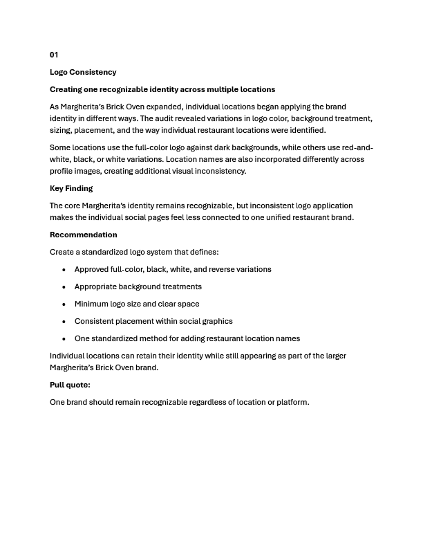
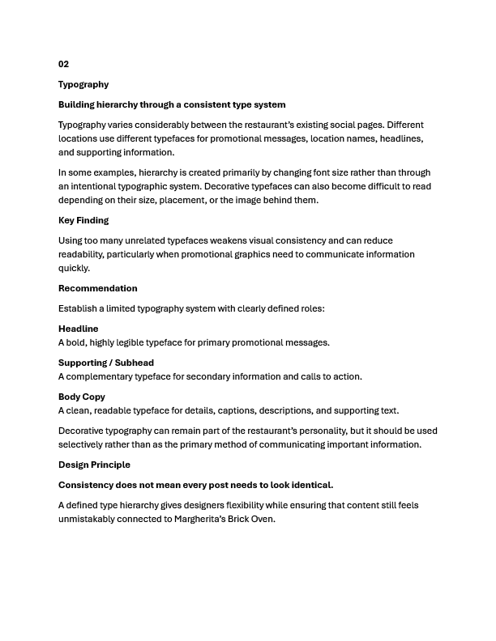
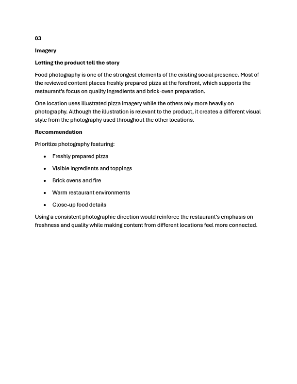
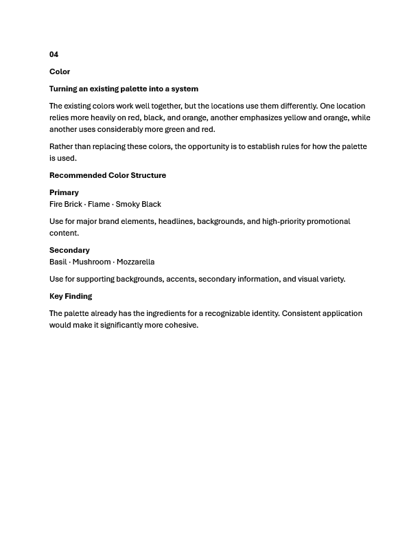
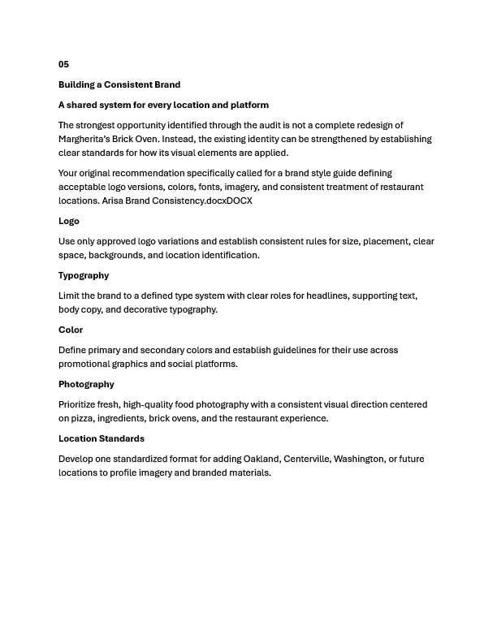
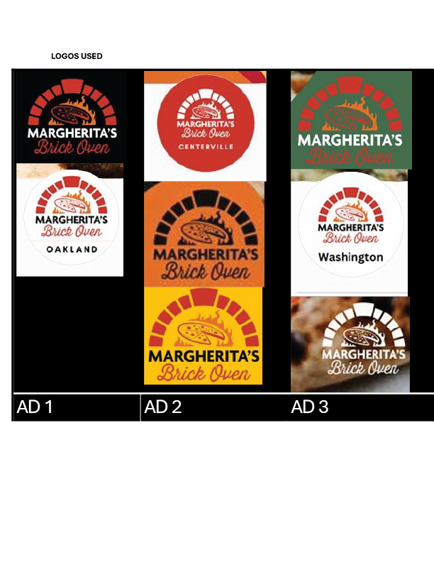
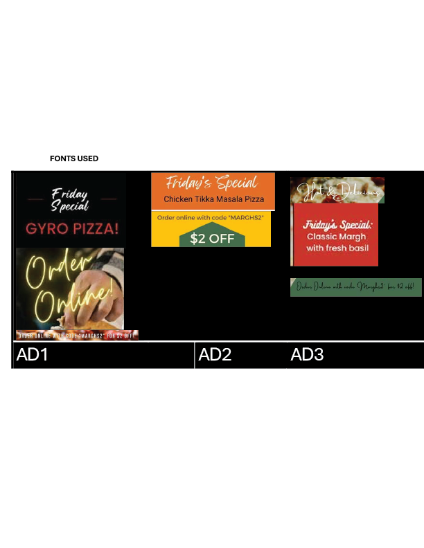
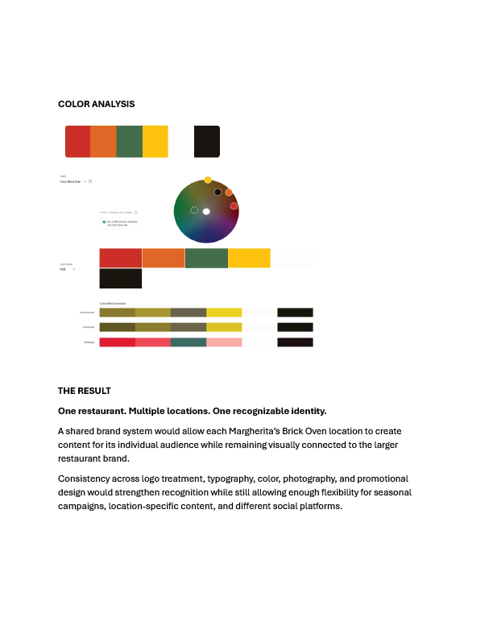
Page 1 of 8
Brand System
The proposed style system created clear rules for logo usage, typography, color, and photography so future social content could remain recognizable regardless of platform or location.
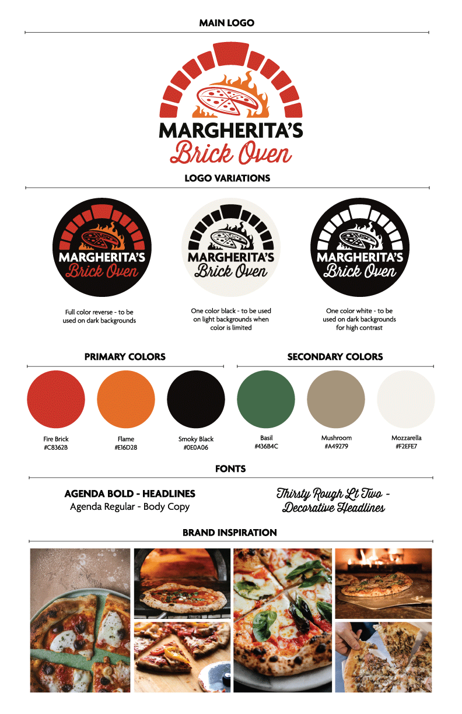
Logo System
The system includes a primary logo along with approved full-color reverse, one-color black, and one-color white variations for different backgrounds and contrast needs.
Typography
Agenda Bold supports primary headlines, Agenda Regular supports body copy, and Thirsty Rough Lt Two provides a decorative headline treatment that reflects the handcrafted restaurant personality.
Color
Fire Brick, Flame, Smoky Black, Basil, Mushroom, and Mozzarella create a warm palette that reflects fire, fresh ingredients, and the restaurant environment.
Photography
The image direction emphasizes freshly prepared pizza, visible ingredients, brick ovens, fire, and close-up food photography to reinforce product quality.
Cross-Platform Social Design
The visual system was extended beyond the existing Facebook pages into additional social channels while keeping messaging, imagery, typography, and brand treatment consistent.
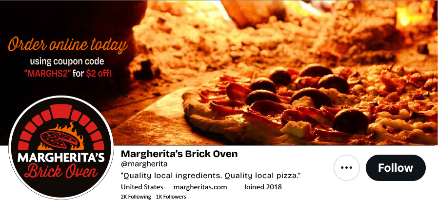
Twitter / X
The platform concept combines the restaurant identity, online-ordering promotion, tagline, and pizza photography within a cohesive profile treatment.
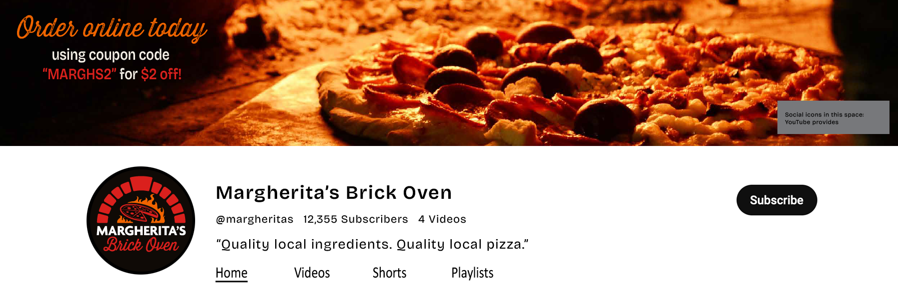
YouTube
The YouTube concept carries the same promotional language and brand identity into a wide-format channel environment.
Promotional Campaign
The online-ordering promotion was adapted across social formats while preserving the same photography, offer, colors, typography, and restaurant identity.
Design Decisions
The same logo system, pizza photography, brand colors, and promotional language create recognition across channels.
The message hierarchy changes based on the available space rather than forcing one layout into every aspect ratio.
Close-up pizza photography keeps the food itself at the center of the campaign while supporting the brand's focus on quality ingredients.
The coupon offer and code remain highly visible so the promotional message can be understood quickly in social feeds.
Outcome
The project transformed a fragmented social presence into a more consistent visual system that could be applied across multiple restaurant locations and social media platforms.
By defining logo treatments, typography, color, photography, and promotional hierarchy before creating campaign assets, the final work could adapt to different formats without losing brand recognition.
The project demonstrates brand analysis, visual system development, social media design, campaign adaptation, typography, and art direction within an existing brand.